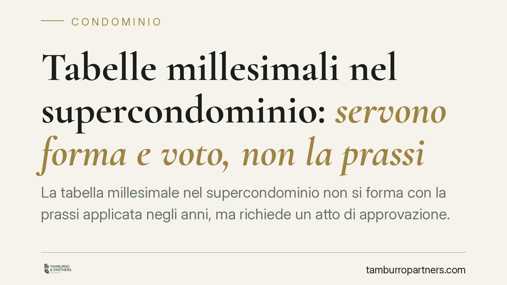

Tabelle millesimali nel supercondominio: servono forma e voto, non la prassi
La tabella millesimale nel supercondominio non si forma con la prassi applicata negli anni, ma richiede un atto di approvazione. È un principio consolidato che tocca la ripartizione delle spese comuni tra più edifici. Capire quale maggioranza serve e come impugnare le decisioni dei rappresentanti evita delibere inefficaci e contenziosi sui riparti.

Il caso e il principio
Il supercondominio è la struttura che lega più condomìni distinti attorno a beni o servizi comuni: un viale di accesso, un impianto centralizzato, un'area a verde. È disciplinato dall'art. 1117-bis c.c., che estende le norme sul condominio a questa realtà più ampia.
La domanda ricorrente è se la tabella millesimale — lo strumento che traduce in quote il valore di ogni unità e regola la ripartizione delle spese — possa consolidarsi per *facta concludentia*, cioè per il semplice fatto che un certo riparto sia stato applicato e accettato nel tempo.
La risposta della Corte di cassazione è negativa, in linea con un orientamento ormai stabile: la prassi non crea la tabella. Occorre un atto, documentato e riferibile a una volontà espressa. Non si tratta di una novità, ma di diritto vivente che conviene ricordare perché la gestione quotidiana spesso lo trascura.
Inquadramento normativo
Il riferimento centrale sulla natura delle tabelle è Cass. Sezioni Unite n. 18477/2010. Le Sezioni Unite distinguono due ipotesi, con conseguenze dirette sul quorum necessario:
- Tabella ricognitiva: quando si limita a tradurre in millesimi, con criteri aritmetici, i valori proporzionali delle unità secondo i parametri di legge. In questo caso è sufficiente la maggioranza prevista dall'art. 1136, comma 2, c.c. (maggioranza degli intervenuti e almeno la metà del valore dell'edificio), perché l'assemblea non dispone dei diritti dei singoli ma accerta un dato tecnico.
- Tabella convenzionale o derogatoria: quando i criteri di riparto si discostano dalla proporzione legale, incidendo sui diritti dei condòmini. Qui serve il consenso unanime, perché si tratta di un accordo che modifica la posizione di ciascuno.
Nel supercondominio si aggiunge l'art. 67 disp. att. c.c. Quando i partecipanti sono più di sessanta, ciascun condominio deve designare un proprio rappresentante, che partecipa all'assemblea chiamata a decidere sulla gestione ordinaria delle parti comuni e sulla nomina dell'amministratore. È un filtro organizzativo che non cambia le regole sostanziali sulle tabelle, ma incide sul chi vota e sul come.
Sul versante dell'impugnazione vale l'art. 1137 c.c.: le delibere annullabili vanno impugnate entro trenta giorni, a pena di decadenza; le delibere nulle possono essere fatte valere senza limiti di tempo da chiunque vi abbia interesse.
Implicazioni pratiche
Per il condòmino, questo significa che un riparto applicato da anni non è intoccabile solo perché è «sempre stato così». Se manca un'approvazione valida, la tabella può essere contestata.
Per l'amministratore, il rischio è approvare o applicare tabelle con il quorum sbagliato: una tabella derogatoria votata a maggioranza, anziché all'unanimità, è esposta a invalidità. La distinzione tra tabella ricognitiva e convenzionale va quindi verificata prima di portare il punto in assemblea.
Nell'assemblea dei rappresentanti, occorre attenzione ai limiti del mandato: il rappresentante decide nell'ambito delle materie per cui l'art. 67 disp. att. c.c. prevede la designazione. Decisioni che eccedono quei limiti, o assunte senza i quorum corretti, sono vulnerabili.
Sul piano dell'impugnazione, la qualificazione della delibera è decisiva. Una delibera che incide su diritti individuali senza il consenso richiesto tende alla nullità, deducibile anche oltre i trenta giorni; un vizio procedurale o di convocazione ricade di norma nell'annullabilità, con il termine breve di decadenza. Confondere i due piani può far perdere la possibilità di reagire.
Cosa fare in concreto
- Verificare il titolo della tabella in uso: controllare se esiste un atto di approvazione o un regolamento contrattuale, e non limitarsi alla prassi di riparto.
- Qualificare la tabella prima del voto: stabilire se è ricognitiva (maggioranza ex art. 1136, comma 2, c.c.) o derogatoria/convenzionale (unanimità).
- Formalizzare le designazioni dei rappresentanti: è opportuno documentare per iscritto le nomine ex art. 67 disp. att. c.c. e i limiti dei relativi poteri.
- Agire nei termini: davanti a una delibera sfavorevole, far valutare subito se si tratti di nullità o annullabilità, perché i trenta giorni dell'art. 1137 c.c. decorrono rapidamente.
- Conservare verbali e convocazioni: sono gli elementi su cui si gioca sia la validità della decisione sia l'eventuale impugnazione.
La chiusura è netta: la prassi non crea diritto. Nel supercondominio la tabella millesimale nasce da un atto, non dall'abitudine, e il quorum dipende dalla sua natura.
---
Contributo informativo a cura di Tamburro & Partners - Avv. Giuseppe Tamburro. Non costituisce parere legale.
Ogni condominio ha una storia a sé.
Se gestisci un'amministrazione e vuoi un confronto su una specifica questione condominiale, scrivi allo studio. Ti rispondiamo entro un giorno lavorativo.